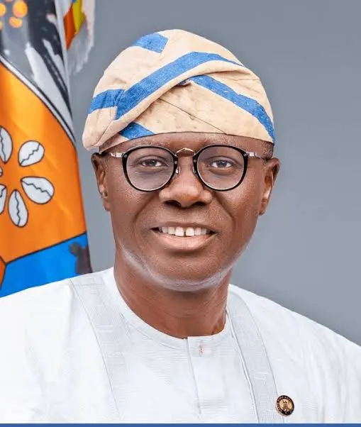

Security & Crime · 26 Oct 2026
Sanwo-Olu details plan to integrate proposed state police into Lagos security framework

Reports from multiple publishers are covering this development in Security & Crime.
Multiple independent publishers are reporting on the same development: Sanwo-Olu details plan to integrate proposed state police into Lagos security framework.
The available reports place the development in the Security & Crime category. The accounts were compared for agreement on the central event rather than simply shared names or broad topics.
One of the available reports describes the development this way: Reports from multiple publishers are covering this development in Security & Crime.
Readers should consult the linked source reports for additional context, updates and details that may change as the story develops.
Sources
This article was produced by the C. O. Eric AI Newsroom from the cited sources. It is published only after automated evidence and safety checks.